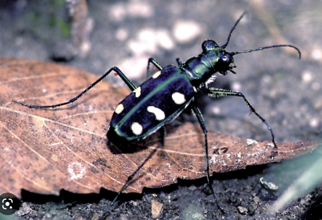
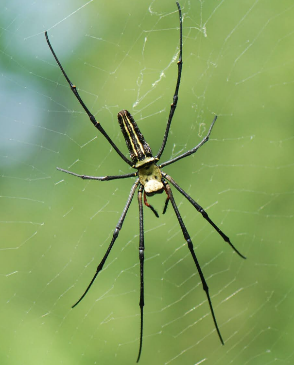
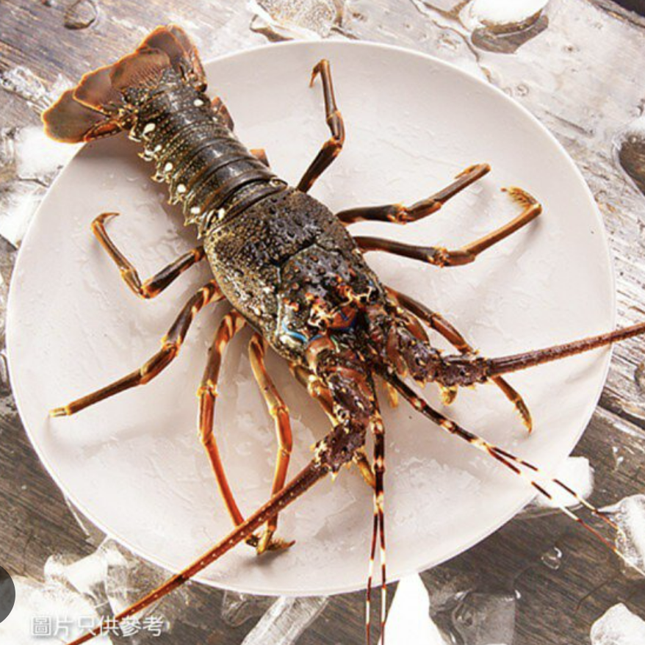
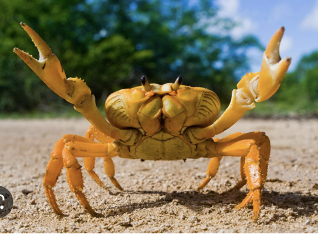
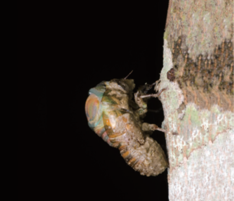

節肢動物是動物界中種類最多、分布最廣的一門。觀察牠們時，要特別注意身體分節、外骨骼與分節的附肢。
節肢動物門是動物界中種類最多、分布最廣的一門，陸地、空中以及水中都能找到牠們的蹤跡，例如昆蟲、蜘蛛、蝦和蟹。
節肢動物的身體分節，每一體節的外形與功能可能不同，並具有外骨骼及分節的附肢。
外骨骼可以保護身體、防止水分蒸發，但也會限制身體生長，所以節肢動物發育過程中必須蛻去舊外骨骼，身體才能長大。

昆蟲陸地上常見，具有分節身體與附肢。
蜘蛛身體有分區，有分節附肢。
蝦多生活於水中，具有外骨骼。
蟹有外骨骼與附肢，第一對常成螯足。身體由不同體節組成，各體節的外形與功能可能不同。
外骨骼像盔甲，可保護身體並防止水分蒸發。
外骨骼會限制生長，因此節肢動物必須蛻去舊外骨骼。

👉 請按下方按鈕 1、2、3，觀察蛻皮的三個步驟。
準備蛻皮